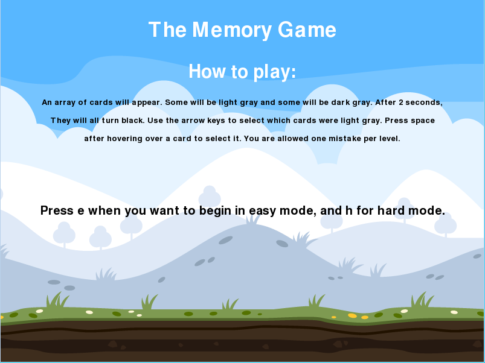
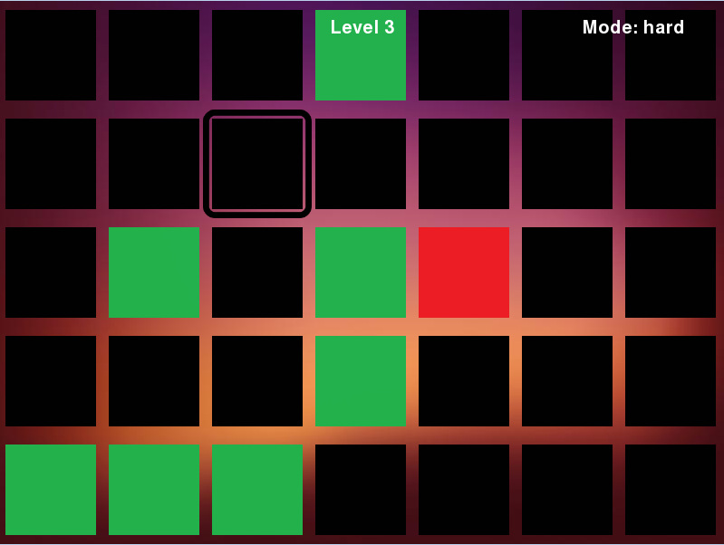
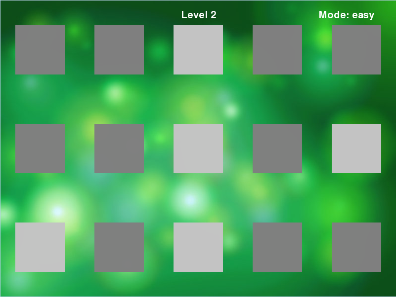

Final Project Content
The Final Project is an extension to my Python Final Project. Depending on the level, 6, 15, or 35 cards will show up. ⅓ of the cards will be light gray, while the other ones will be dark gray. After some time, the cards will turn black. The player will then have to select which cards were light gray. It will be a memory game, but more formulated and professional. The selector will not be a Pikachu sprite, but a white border that indicates which box is being selected. This selector will be controlled with arrow keys and it is how the user interacts with the game and selects cards. In addition, a correct card selected will not just flash green; it will stay green to show that it was already selected and correct. The same applies to an incorrect card turning red. Players are also allowed one mistake per level. Also, there will be an “easy” mode and “hard” mode, which will change the time the player has to memorize the card configuration.
  